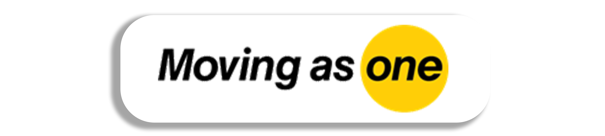
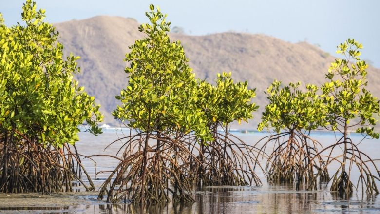
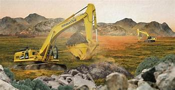
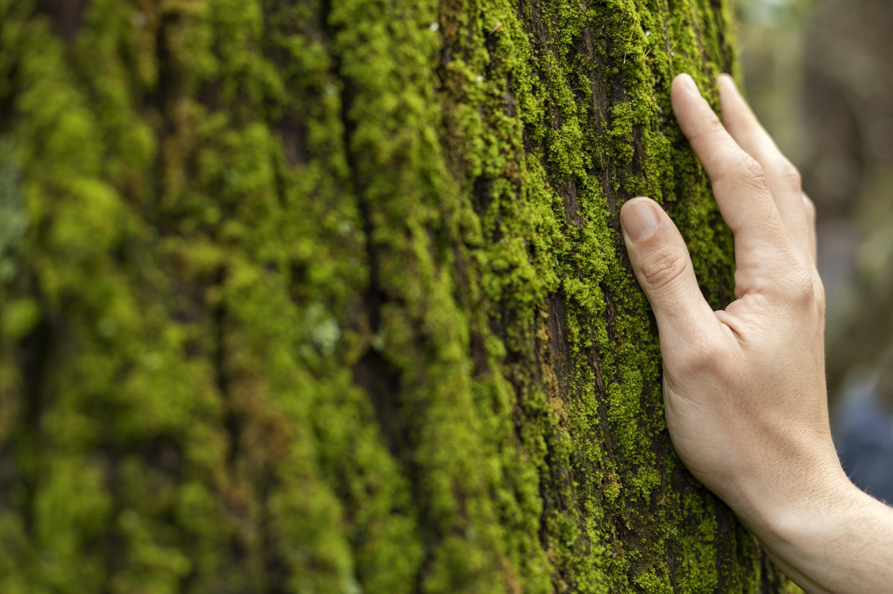

EKONOMI KARBON DAN PENGURANGAN EMISI KERTAS




❮
❯
ECO-PAPER
UT Surabaya
Selama Satu Tahun
ADM Departemen
Sparepart Departemen
Service Departemen
Konversi KG ke KGCO2
Konversi Emisi Karbon ke Pohon dan Biaya